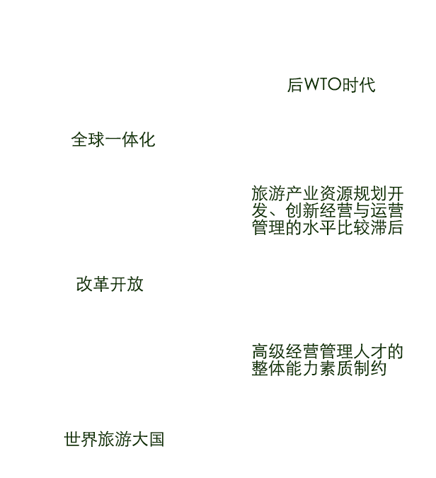

关闭
我们诚挚地邀请您成为首届
“中国旅游行业领军人才管理与发展高级课程”
研修班的学员！
国内旅游产业前景

当务之急
培养旅游产业高层管理人才
具备国际化视野
具备前沿经营理念
具备先进管理经验
掌握旅游产业经营创新技术
光华管理学院
全球商业知识的创造者和输出者
影响全球各界高管的商业实践与思维
创造全球各界分享商业实践与思想的平台
旅游卫视
是经广电总局批准的中国境内唯一 一家以旅游休闲为主要内容的专业 化卫星电视频道。
为旅游业服务
为旅游者服务
设立“中国旅游行业领军人才管理与发展高级课程”
培养一批懂经营、知管理、善创新，具有国际化战略思维的本土旅游产业高层管理人才
借鉴先进国家的旅游产业创新发展经验、旅游企业经营管理技术及国际最前沿的管理与运作知识，解决与旅游产业相关企业所面临的诸多问题。
课程简介
时间：2015年06月24日-2016年06月
地点：北京大学光华管理学院
提升旅游行业管理者洞察产业政策的敏锐度；
通过旅游行业管理者自我评估来提升执行力；
获取保持组织竞争优势的战略框架和战略工具；
掌握拥有旅游管理有效决策的工具和方法；
构建一个共同探索挑战与发展的广阔校友网络。
本课程主要面向参加大型旅游景区、旅游地产、酒店、餐饮及旅行社的董事长、总经理。
参加学员需具备5年以上管理工作经验，大学专科以上学历。
本课程以经济发展与行业趋势、市场营销、战略创新、资本运作、团队与领导力为重点。
每期班跨度为一年，分五个模块，每两个月上课一次，每次两至三天，共计十天。
经济发展与行业趋势:
宏观经济发展及对旅游业的影响
旅游产业背后的经济学思维
旅游产业发展趋势
市场营销:
旅游业品牌塑造与管理
旅游企业市场营销策略
消费者行为与服务营销
战略创新:
平台战略与产业生态
旅游企业管理创新与组织变革
蓝海思维与旅游商业模式创新
资本运作:
企业价值评估
旅游产业资本运作
旅游企业的项目投融资策略
团队与领导力:
中国企业管理者的领导艺术
高效率团队建设与管理
绩效管理与员工激励
周黎安
北京大学光华管理学院应用经济学系，教授，系主任，博士生导师。
陈玉宇
北京大学光华管理学院应用经济学系教授。
魏小安
著名旅游经济和管理专家、旅游、酒店研究专家，有“中国酒店业教父”美誉。
周长辉
北京大学光华管理学院战略管理学系教授，系主任，博士生导师。光华管理学院管理经营研究所所长等。
张建君
北京大学光华管理学院组织管理系副教授，北京大学政府管理学院兼职教授，北京大学博士生导师。
成功完成全部课程，出席率达到80%以上，将获得北京大学光华管理学院颁发的结业证书
提交报名表、身份证复印件、最高学历证明、单位推荐函
审核报名资格
审核通过，光华管理学院将发放录取通知书
课程申请截止时间2015年6 月15 日，报名人数达55人后自动截止报名。
旅游卫视
罗女士 xxta2008@126.com
电话：010-84409660 18610436335
北京大学光华管理学院高层管理教育中心定制课程部总监
张女士 qzhang@gsm.pku.edu.cn
电话：010-62747097 13910827043
六月，是北京最美的季节，欢迎大家百战归来再读书，期待着与大家相会在北京大学光华管理学院，并相信此课程的学习能令大家满载而归。